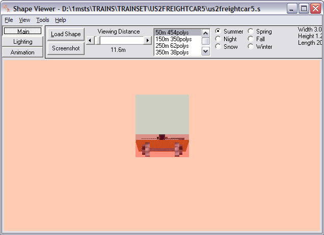

It's been stated elsewhere that the length of a model should be calculated as the distance between coupler centres. So if we take the end-end dimension from the .S file of 20.27m and subtract say 0.4m, you'll end up with a coupler centre-coupler centre dimension of 19.87m.
Change the numbers in the Size line to read 19.87m (as in image above).
Change the numbers in the InertiaTensor to read 19.27m (as in image above). The InertiaTensor length is inter-related with the coupler damping characteristics and should be the same or just slightly smaller than the actual Size.
Save the file.
While you're there, check the .SD file (see below).
Examine the ESD_Bounding_Box line.
Firstly, what do these numbers mean? These numbers define the limits of the bounding box from the centre of the model in the format
ESD_Bounding_Box ( front-x lower-y front-z rear-x upper-y rear-z);
the parameters are in meters:
x: left negative, right positive relative to origin;
y: positive above, negative below origin;
z: positive forward of, negative to the rear of the origin.
So an ESD_Bounding_Box ( -2 0 5 2 3 -5 ) would define a bounding box 4m wide, 3m high and 10m long, extending 2m either side of the origin of the model, up 3m from the origin of the model and 5m fore and aft of the origin of the model.
Several things to check:
- The second parameter (in this case 0.957m) should be 0.6m or higher as it delineates the lower limit of the bounding box: some models have this figure as low as 0.01m which may cause derailments on uneven track or level crossings.
Route Riter 6.1.63 or higher now has a button under "MISC" enabling you to change all the minimum height bounding box values to 0.90.
In the case of a flatcar, such as this one, it might pay to increase the height of the bounding box to say 2.5m to ensure it doesn't get "run over" by an adjacent vehicle.
- Add the third and sixth figures (ignore the minus sign on the third parameter): these two figures should add up to a figure less than the model length figure in the .S file. The easiest way to achieve this is to change the third parameter to Shape Viewer's min Z figure plus 1 and the sixth parameter to Shape Viewer's Max Z minus 1. This pretty well always leaves the bounding box covering the physical shape of the wagon excluding draft gear and couplers.
- Truncate all values to two decimal places.
- Make sure the width and height parameters are correct. Some bounding boxes are way out width-wise and you may get collisions with vehicles on adjacent tracks: set the width (1st and 4th parameters) to -1.47 and 1.47 on all (standard gauge) rolling stock.
See image below for an example of a Bounding Box WAY out of line.
When you've done all the above, this is how your .SD file should look:
And this is how it should look in Shape Viewer - from the side.....
....and from the end......

Now let's look at this models in the simulation again. You can see that these wagons now appear correctly coupled and couple and uncouple correctly.
Consequences of Too Long a Bounding Box: the BB will prevent the engine or car from properly re-coupling.
Consequences of Too short a Bounding Box: the shortened BB prevents the car from being stopped in buffer-type collisions at the end of track before it "falls off the rails".
You may wish to alter some of the figures I've presented here, but at least you have a formula for establishing correct dimensions for model length and bounding boxes.